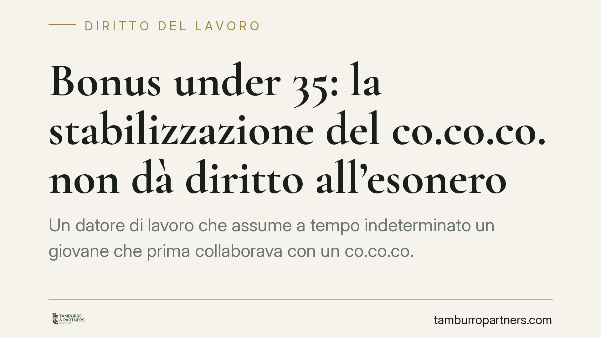

Bonus under 35: la stabilizzazione del co.co.co. non dà diritto all'esonero
Un datore di lavoro che assume a tempo indeterminato un giovane che prima collaborava con un co.co.co. può beneficiare dell'esonero contributivo per gli under 35? La risposta, secondo la formulazione attuale della misura, è negativa: il beneficio è riservato alla trasformazione di rapporti a termine. La distinzione è sottile ma decisiva per evitare recuperi contributivi.

Il caso
La domanda arriva da un'azienda che vorrebbe stabilizzare un giovane under 35 fino a oggi inquadrato come collaboratore coordinato e continuativo (co.co.co.). Il dubbio: l'assunzione a tempo indeterminato di questa figura consente di accedere all'esonero contributivo totale previsto per i giovani?
Il punto è rilevante perché l'esonero, quando spettante, azzera i contributi a carico del datore di lavoro per un periodo definito, con un risparmio considerevole. Ma i presupposti sono stringenti, e un'applicazione errata espone al recupero delle somme e alle relative sanzioni.
Inquadramento normativo
La misura è disciplinata dall'art. 4 del decreto-legge che ha introdotto l'esonero per la stabilizzazione dei giovani under 35 (indicato nelle fonti divulgative come D.L. 62/2026, conv. L. 112/2026). Si avverte che numero, anno e articolo della norma, nonché il termine del 30 aprile 2026 richiamato oltre, devono essere confermati sulla Gazzetta Ufficiale e sui messaggi applicativi INPS prima di qualunque decisione operativa. Il presente contributo riflette la formulazione attualmente circolante.
Secondo tale formulazione, l'esonero contributivo totale è collegato alla trasformazione in rapporto a tempo indeterminato di contratti a termine instaurati entro una data soglia (indicata nelle fonti come 30 aprile 2026). Il beneficio presuppone quindi l'esistenza, a monte, di un contratto di lavoro subordinato a tempo determinato: è questo rapporto che viene "stabilizzato".
Il co.co.co. appartiene invece a una categoria diversa. La collaborazione coordinata e continuativa non è, in linea di principio, lavoro subordinato a termine. Occorre però tenere presente l'art. 2 del D.Lgs. 81/2015, che estende la disciplina del lavoro subordinato alle collaborazioni etero-organizzate, cioè quelle in cui il committente organizza modalità, tempi e luogo della prestazione. In presenza di tali indici, il rapporto può essere ricondotto al lavoro dipendente con tutte le conseguenze del caso. Ma questo profilo riguarda la riqualificazione, non l'accesso automatico all'esonero.
Perché la stabilizzazione del co.co.co. non attiva il beneficio
L'esonero richiede la trasformazione di un contratto a termine già esistente. Chi oggi impiega un co.co.co. non ha in essere un contratto a tempo determinato: ha un rapporto di collaborazione. Assumere quel collaboratore a tempo indeterminato non è una "trasformazione" del rapporto a termine, ma una nuova assunzione di un soggetto che prima era legato da un contratto di natura diversa.
La differenza è giuridica, non formale. La norma premia il passaggio dal precariato a termine alla stabilità; non copre il passaggio dalla collaborazione autonoma al lavoro dipendente.
Il rischio di riqualificazione e il recupero contributivo
Un'ulteriore insidia riguarda proprio la natura del rapporto pregresso. Se il co.co.co. presentava, in concreto, i caratteri dell'etero-organizzazione descritti dall'art. 2 D.Lgs. 81/2015, l'INPS potrebbe riqualificare la collaborazione come lavoro subordinato per il periodo passato. In tal caso emergono contributi omessi e sanzioni relativi alla fase precedente l'assunzione.
Il problema, qui, non è l'esonero: è la gestione corretta del rapporto a monte. Applicare un beneficio sul presupposto errato e, al contempo, trascinare un pregresso potenzialmente riqualificabile moltiplica l'esposizione del datore di lavoro.
Cosa fare in concreto
- Verificate la natura del rapporto in essere. Distinguete con precisione tra contratto a termine (stabilizzabile) e co.co.co. (non rientrante nell'esonero per stabilizzazione).
- Controllate i presupposti temporali sulla fonte ufficiale: data di instaurazione del rapporto a termine, requisito anagrafico del lavoratore, ambito di applicazione del beneficio.
- Esaminate gli indici di etero-organizzazione del co.co.co. (direttive sui tempi, sul luogo, sulle modalità) per valutare il rischio di riqualificazione retroattiva.
- Non autoliquidate l'esonero in caso di dubbio: l'applicazione indebita comporta recupero contributivo e sanzioni.
- Monitorate messaggi e circolari INPS che chiariranno l'ambito applicativo: in loro assenza, è opportuno un esame tecnico preventivo dei singoli rapporti.
La regola di fondo resta semplice: l'esonero segue il contratto a termine, non la persona. Capire da quale rapporto si parte è la premessa di ogni scelta corretta.
---
Contributo informativo a cura di Tamburro & Partners Avvocati - Avv. Giuseppe Tamburro. Non costituisce parere legale.
Ogni storia di lavoro ha i suoi tempi.
Se gestisci HR e vuoi un confronto su contenzioso, ispezioni o licenziamenti, scrivi allo studio. Ti rispondiamo entro un giorno lavorativo.